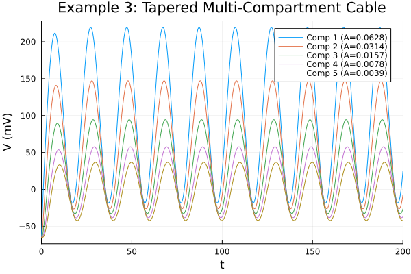

Example 3: Acausal Coupling (Tapered Multi-Compartment Cable)
Let's look at the acausal side of ModelingToolkit. Unlike directed chemical synapses, gap junctions (electrical couplings) are bidirectional. We'll build a 5-compartment passive dendrite that tapers in size down its length, and inject current at the soma to observe classic cable-theory voltage attenuation.
using MTKNeuralToolkit
using ModelingToolkit: mtkcompile, @named
using ModelingToolkitStandardLibrary.Blocks: Sine
using OrdinaryDiffEq
using Plots1. Build Passive Compartments with Heterogeneous Geometries
top = Scalar()Scalar()Define a tapering geometry: the soma is large, and distal dendrites are small. We'll keep standard membrane capacitance ($1.0 \text{ \mu F/cm}^2$) and just change the area.
areas = [0.0628, 0.0314, 0.0157, 0.0078, 0.0039] #cm^2
function build_passive_compartment(name::Symbol, area::Float64)
geom = Geometry(area=area, C_m=1.0) #Geometry struct handles biophysical scaling
@named cap = Capacitor(topology=top, C=1.0, geometry=geom)
@named leak = GenericChannel(topology=top, g=0.3, E_rev=-65.0, gates=GateSpec[], geometry=geom)
return build_compartment(cap, [leak]; name=name, V_init=-65.0, topology=top)
endbuild_passive_compartment (generic function with 1 method)Create a chain of compartments with decreasing area
N = 5
cable = [build_passive_compartment(Symbol(:comp, i), areas[i]) for i in 1:N]5-element Vector{Compartment{NoMorphology, NoGeometry, Float64}}:
Compartment{NoMorphology, NoGeometry, Float64}(Model comp1:
Subsystems (6): see hierarchy(comp1)
cap
injector
syn_injector
p
⋮
Equations (31):
19 standard: see equations(comp1)
12 connecting: see equations(expand_connections(comp1))
Unknowns (30): see unknowns(comp1)
cap₊v(t)
cap₊i(t)
cap₊p₊v(t)
cap₊p₊i(t)
⋮
Parameters (3): see parameters(comp1)
cap₊C
leak₊g
leak₊E_rev, (V = comp1₊cap₊v(t), p_pin = Model comp1₊p:
Equations (2):
2 connecting: see equations(expand_connections(comp1₊p))
Unknowns (2): see unknowns(comp1₊p)
v(t)
i(t), n_pin = Model comp1₊n:
Equations (2):
2 connecting: see equations(expand_connections(comp1₊n))
Unknowns (2): see unknowns(comp1₊n)
v(t)
i(t), I_ext = comp1₊injector₊I₊u(t), I_syn = comp1₊syn_injector₊I₊u(t), cap_name = :cap), -65.0, Scalar(), NoGeometry(), NoMorphology())
Compartment{NoMorphology, NoGeometry, Float64}(Model comp2:
Subsystems (6): see hierarchy(comp2)
cap
injector
syn_injector
p
⋮
Equations (31):
19 standard: see equations(comp2)
12 connecting: see equations(expand_connections(comp2))
Unknowns (30): see unknowns(comp2)
cap₊v(t)
cap₊i(t)
cap₊p₊v(t)
cap₊p₊i(t)
⋮
Parameters (3): see parameters(comp2)
cap₊C
leak₊g
leak₊E_rev, (V = comp2₊cap₊v(t), p_pin = Model comp2₊p:
Equations (2):
2 connecting: see equations(expand_connections(comp2₊p))
Unknowns (2): see unknowns(comp2₊p)
v(t)
i(t), n_pin = Model comp2₊n:
Equations (2):
2 connecting: see equations(expand_connections(comp2₊n))
Unknowns (2): see unknowns(comp2₊n)
v(t)
i(t), I_ext = comp2₊injector₊I₊u(t), I_syn = comp2₊syn_injector₊I₊u(t), cap_name = :cap), -65.0, Scalar(), NoGeometry(), NoMorphology())
Compartment{NoMorphology, NoGeometry, Float64}(Model comp3:
Subsystems (6): see hierarchy(comp3)
cap
injector
syn_injector
p
⋮
Equations (31):
19 standard: see equations(comp3)
12 connecting: see equations(expand_connections(comp3))
Unknowns (30): see unknowns(comp3)
cap₊v(t)
cap₊i(t)
cap₊p₊v(t)
cap₊p₊i(t)
⋮
Parameters (3): see parameters(comp3)
cap₊C
leak₊g
leak₊E_rev, (V = comp3₊cap₊v(t), p_pin = Model comp3₊p:
Equations (2):
2 connecting: see equations(expand_connections(comp3₊p))
Unknowns (2): see unknowns(comp3₊p)
v(t)
i(t), n_pin = Model comp3₊n:
Equations (2):
2 connecting: see equations(expand_connections(comp3₊n))
Unknowns (2): see unknowns(comp3₊n)
v(t)
i(t), I_ext = comp3₊injector₊I₊u(t), I_syn = comp3₊syn_injector₊I₊u(t), cap_name = :cap), -65.0, Scalar(), NoGeometry(), NoMorphology())
Compartment{NoMorphology, NoGeometry, Float64}(Model comp4:
Subsystems (6): see hierarchy(comp4)
cap
injector
syn_injector
p
⋮
Equations (31):
19 standard: see equations(comp4)
12 connecting: see equations(expand_connections(comp4))
Unknowns (30): see unknowns(comp4)
cap₊v(t)
cap₊i(t)
cap₊p₊v(t)
cap₊p₊i(t)
⋮
Parameters (3): see parameters(comp4)
cap₊C
leak₊g
leak₊E_rev, (V = comp4₊cap₊v(t), p_pin = Model comp4₊p:
Equations (2):
2 connecting: see equations(expand_connections(comp4₊p))
Unknowns (2): see unknowns(comp4₊p)
v(t)
i(t), n_pin = Model comp4₊n:
Equations (2):
2 connecting: see equations(expand_connections(comp4₊n))
Unknowns (2): see unknowns(comp4₊n)
v(t)
i(t), I_ext = comp4₊injector₊I₊u(t), I_syn = comp4₊syn_injector₊I₊u(t), cap_name = :cap), -65.0, Scalar(), NoGeometry(), NoMorphology())
Compartment{NoMorphology, NoGeometry, Float64}(Model comp5:
Subsystems (6): see hierarchy(comp5)
cap
injector
syn_injector
p
⋮
Equations (31):
19 standard: see equations(comp5)
12 connecting: see equations(expand_connections(comp5))
Unknowns (30): see unknowns(comp5)
cap₊v(t)
cap₊i(t)
cap₊p₊v(t)
cap₊p₊i(t)
⋮
Parameters (3): see parameters(comp5)
cap₊C
leak₊g
leak₊E_rev, (V = comp5₊cap₊v(t), p_pin = Model comp5₊p:
Equations (2):
2 connecting: see equations(expand_connections(comp5₊p))
Unknowns (2): see unknowns(comp5₊p)
v(t)
i(t), n_pin = Model comp5₊n:
Equations (2):
2 connecting: see equations(expand_connections(comp5₊n))
Unknowns (2): see unknowns(comp5₊n)
v(t)
i(t), I_ext = comp5₊injector₊I₊u(t), I_syn = comp5₊syn_injector₊I₊u(t), cap_name = :cap), -65.0, Scalar(), NoGeometry(), NoMorphology())2. Connect Compartments with Gap Junctions
The axial resistance between two compartments is given by:
\[R = \frac{R_i \cdot L}{A}\]
For simplicity, let's say internal resistivity $R_i$ multiplied by length $L$ is $1.0$. Smaller areas mean higher axial resistance, which causes more voltage attenuation. We'll calculate $R$ based on the average area of the two connected compartments.
coupling_specs = CouplingSpec[]
for i in 1:(N-1)
avg_area = (areas[i] + areas[i+1]) / 2.0
R_axial = 1.0 / avg_area
gj = GapJunction(R=R_axial; name=Symbol(:gj_, i))
push!(coupling_specs, CouplingSpec(cable[i], cable[i+1], gj))
end3. Driving Stimuli
Inject a slow sinusoidal current only into the first compartment (the soma)
@named current_driver = Sine(amplitude=5.0, frequency=0.05, offset=5.0)
drivers = [(1, current_driver)]1-element Vector{Tuple{Int64, ModelingToolkitBase.System}}:
(1, Model current_driver:
Subsystems (1): see hierarchy(current_driver)
output
Equations (1):
1 standard: see equations(current_driver)
Unknowns (1): see unknowns(current_driver)
output₊u(t): Inner variable in RealOutput output
Parameters (5): see parameters(current_driver)
offset
start_time
amplitude
frequency
⋮)4. Build and Simulate the Network
net = build_acausal_network(cable;
coupling_specs=coupling_specs,
drivers=drivers,
name=:cable_net)
println("Compiling acausal cable network...")
sys = mtkcompile(net.sys)
prob = ODEProblem(sys, [], (0.0, 200.0))
println("Solving...")
sol = solve(prob, Rosenbrock23())retcode: Success
Interpolation: specialized 2nd order "free" stiffness-aware interpolation
t: 1221-element Vector{Float64}:
0.0
0.003305516484020153
0.012294144986027869
0.026539214464755795
0.050889110050485103
0.08525255688756438
0.13218707141087518
0.19090767762555824
0.26121121134990544
0.34114983743604366
⋮
199.49770768458913
199.55322642793675
199.61239328389468
199.6753129920448
199.74209162579825
199.81283689087047
199.88765800354713
199.96666411994028
200.0
u: 1221-element Vector{Vector{Float64}}:
[-65.0, -65.0, -65.0, -65.0, -65.0]
[-64.99999999999555, -64.99999999749826, -64.99999866973045, -64.9993504680873, -64.73714087850377]
[-64.999999998213, -64.99999965758062, -64.99994034046551, -64.99110643589161, -64.02554346113456]
[-64.99999993931712, -64.99999375958834, -64.99944019954815, -64.95919011382529, -62.90715502938977]
[-64.99999863776836, -64.99992291243294, -64.99624607201228, -64.85385515397907, -61.02088837128904]
[-64.9999843514392, -64.99944725850176, -64.98337115676485, -64.6044081129877, -58.41034264949808]
[-64.99987673735365, -64.99710708396104, -64.94231356580099, -64.09353566629365, -54.93388391669197]
[-64.99932270895283, -64.98872697930416, -64.84028769388398, -63.21577718703974, -50.71380416577911]
[-64.99717691272102, -64.96499363273736, -64.62831640111587, -61.87487978563122, -45.82592626898418]
[-64.99072883524774, -64.91052453471946, -64.25403961262245, -60.04107363024291, -40.45396254563202]
⋮
[-41.97571835368326, -38.11912953652399, -30.02388841039412, -15.124855040394738, 11.124195998388915]
[-42.03205333716371, -38.04311539734407, -29.692797708469975, -14.378505883175194, 12.502456261416514]
[-42.07891639801357, -37.94609879441178, -29.31968212868555, -13.558038682909535, 14.000726339664638]
[-42.113821253460834, -37.8248444440385, -28.900096984145627, -12.657455174285895, 15.626794567392588]
[-42.13401811994038, -37.67581602305342, -28.42924749243748, -11.67036843148853, 17.38883939108509]
[-42.13647908496614, -37.49516226616046, -27.90197745480526, -10.58999787011784, 19.29542178370538]
[-42.117883591478495, -37.27870491830261, -27.31276307843791, -9.409174623946047, 21.355459496205636]
[-42.07460584865579, -37.02193344025506, -26.655722524390598, -8.120376669958306, 23.578151036370794]
[-42.04906531658116, -36.90493364972521, -26.367834388789372, -7.56383548655647, 24.53030849945701]5. Plot the Results
p = plot(title="Example 3: Tapered Multi-Compartment Cable",
xlabel="Time (ms)", ylabel="V (mV)")
for i in 1:N
comp_sys = getproperty(sys, Symbol(:comp, i))
plot!(p, sol, idxs=[getproperty(comp_sys, :cap).v], label="Comp $i (A=$(areas[i]))")
end
p
This page was generated using Literate.jl.